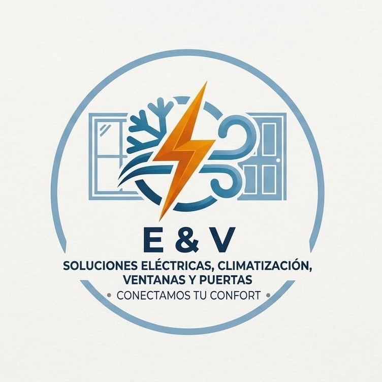

Diagnóstico de equipos
Revisión del funcionamiento y de los síntomas reportados para identificar las necesidades de intervención.

E & V SOLUCIONES INTEGRALESCotiza tu proyectoDiagnóstico y reparación de equipos industriales y comerciales, con una evaluación que permite definir la intervención y los componentes necesarios.
Consultar este servicioRevisión del funcionamiento y de los síntomas reportados para identificar las necesidades de intervención.
Trabajo sobre los componentes eléctricos y mecánicos que formen parte del alcance acordado.
Evaluación de conexiones y componentes asociados al funcionamiento del equipo.
Definición de necesidades de mantenimiento considerando el estado del equipo y las condiciones de operación.
Cuando un equipo presenta fallas, cambios en su funcionamiento o requiere mantenimiento, una evaluación ayuda a definir los próximos pasos.
Atendemos consultas sobre equipos industriales y comerciales. Comparte los datos del equipo para confirmar si podemos atenderlo.
Podemos orientar la consulta con los datos que envíes. La reparación y sus costos dependen del diagnóstico y de los componentes necesarios.
Primero se identifica la referencia compatible. La disponibilidad, el costo y el plazo se confirman antes de acordar su uso.